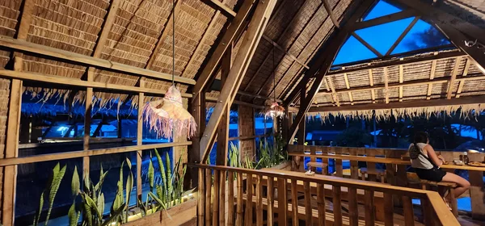
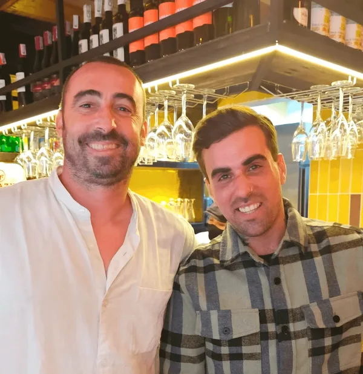
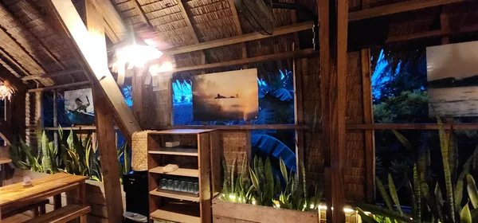
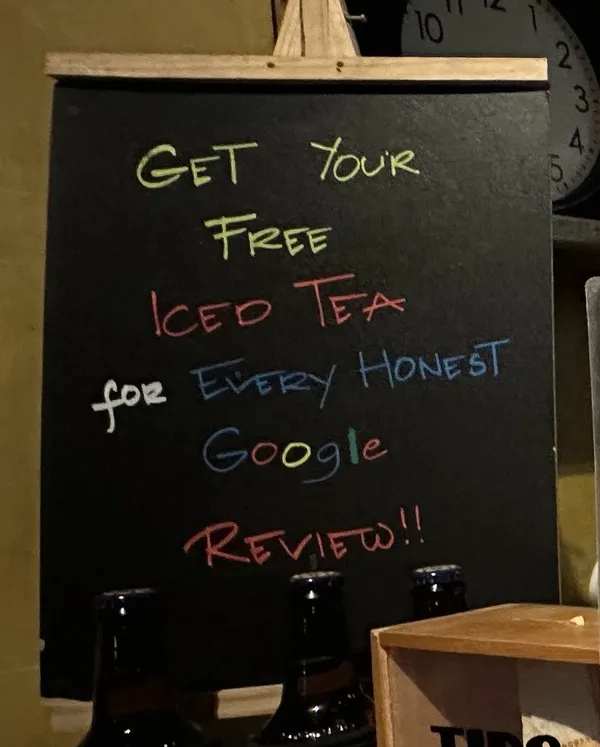
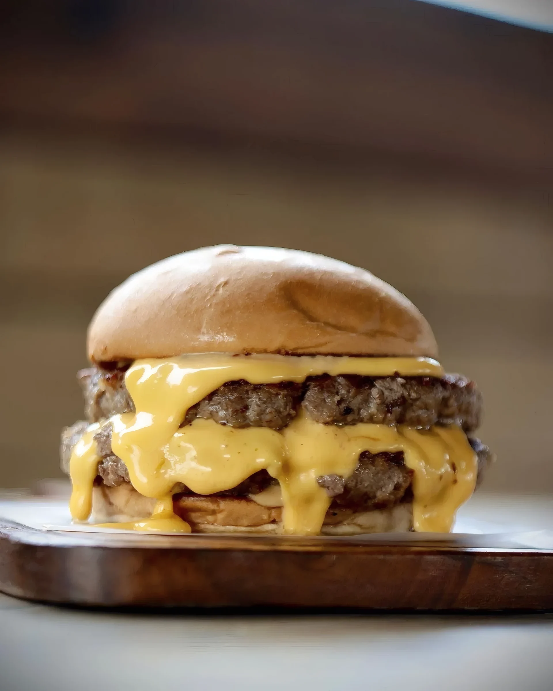
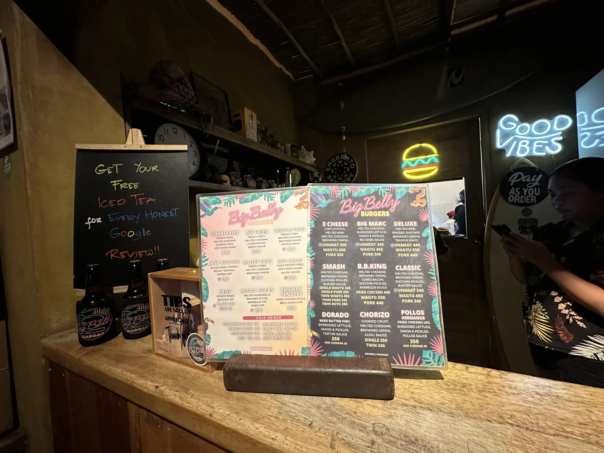
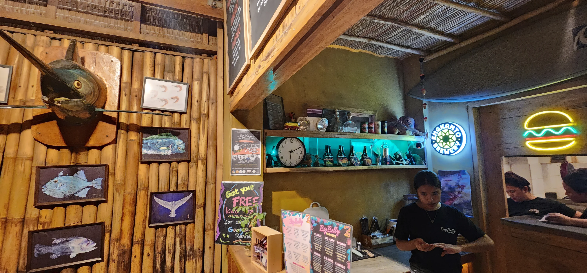
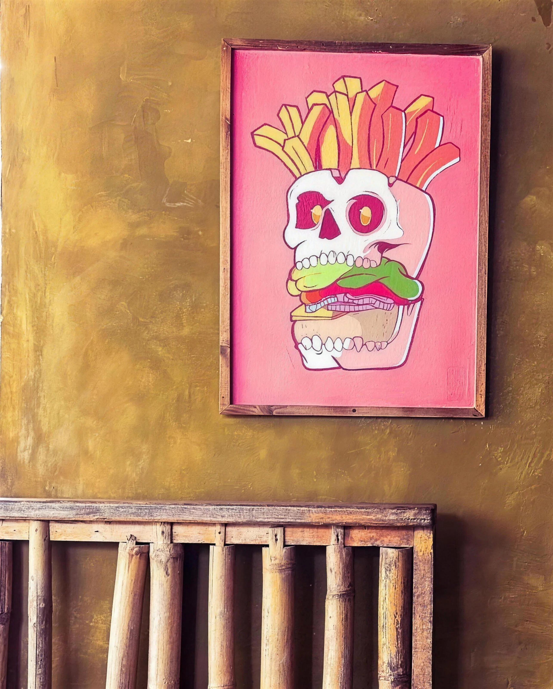
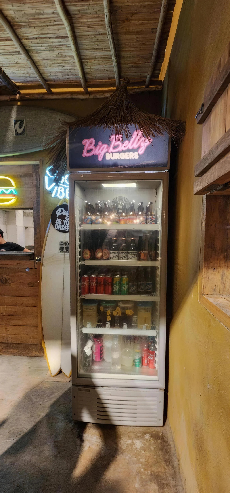
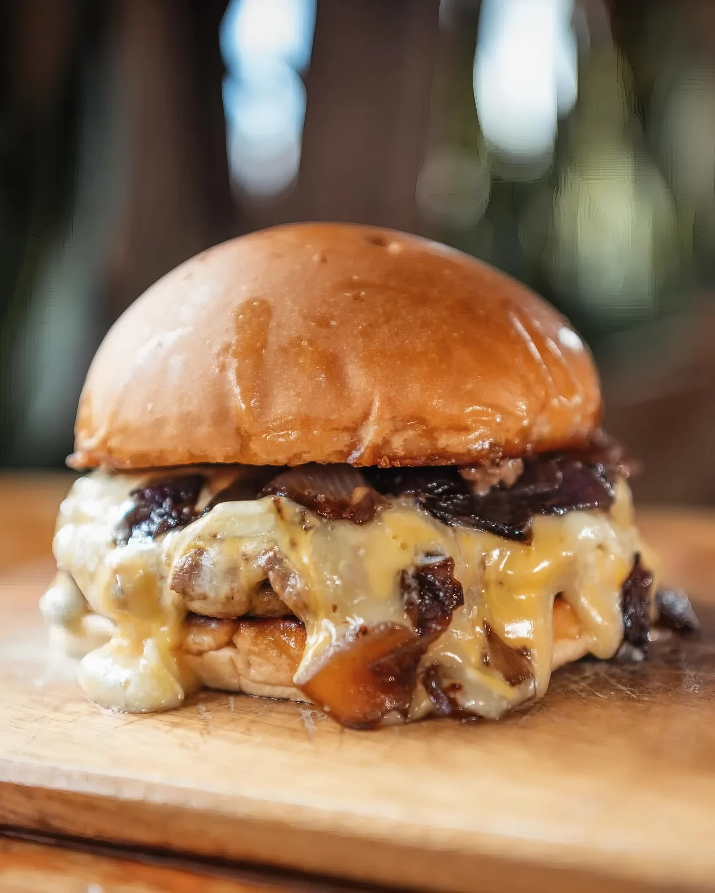

The shack
An open hut under a nipa roof on Tourism Road, General Luna. Wooden tables and benches, surfboards by the counter, a marlin on the bamboo wall.





Two friends from Barcelona
Marc Alberich runs the place, chef Miguel “Mingu” Marcelino runs the kitchen. They met on Siargao through a mutual friend and found they shared a love for good burgers. The name came from Mingu’s girlfriend, who pointed at his belly.
January 2020
Big Belly opens on Tourism Road.
December 2021
Open again after the lockdown.
October 2023
Big Belly Manila opens in BGC, together with The Nikkei Group.

Choose your protein
Most burgers on the menu come with the patty you pick.
Wagyu
6 burgers 3 Cheese, Big Marc, Deluxe, Smash, B.B.King, Classic
Pork
7 burgers 3 Cheese, Big Marc, Deluxe, Smash, B.B.King, Classic, Chorizo
Unmeat
4 burgers The plant-based patty, on the 3 Cheese, Big Marc, Deluxe and Classic
Chorizo
Mingu makes the chorizo patty from pork chorizo, wagyu fat, garlic and Spanish paprika.

At the counter
Order and pay at the counter, as the sign by the kitchen window says: pay as you order. The kitchen window sits under the neon burger.
A chalkboard by the menu offers a free iced tea for every honest Google review.



Under the nipa roof
Wooden tables and benches under light bulbs, surf photos on the bamboo wall, and a fridge with the neon logo next to the counter.


Tourism Road, General Luna
- Address
- Tourism Road, Purok 3, General Luna, Siargao, Surigao del Norte 8419
- Open
- Every day, 11:30 am to 9:30 pm
- Phone
- +63 918 540 0815
- Service
- Dine in, curbside pickup, delivery
- Delivery
- Through TravelGO and Siargao Delivery
